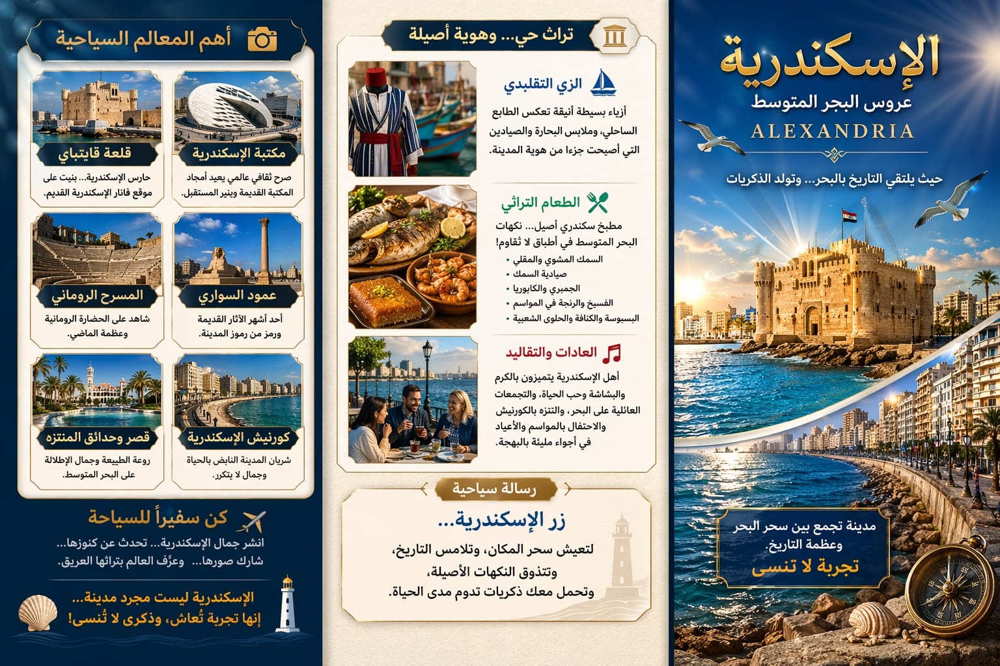

لؤلؤة البحر المتوسط وملتقى الحضارات

تقع مدينة الإسكندرية على ساحل البحر المتوسط، وتُعد من أقدم وأهم المدن التاريخية في مصر، حيث أسسها القائد الإسكندر الأكبر، لتصبح مركزًا للعلم والثقافة والتجارة عبر العصور.
تضم الإسكندرية العديد من المعالم الفريدة مثل مكتبة الإسكندرية الحديثة، قلعة قايتباي، عمود السواري، والمسرح الروماني، مما يجعلها وجهة لا تُنسى لعشاق التاريخ.
تشتهر الإسكندرية بالزي الشعبي البسيط المرتبط بالبحر، بالإضافة إلى عادات أهلها المميزة مثل حب البحر والتجمعات العائلية، والاحتفال بالمناسبات بطابع خاص يعكس روح المدينة.
من أشهر أطباق الإسكندرية: السمك المشوي، الجمبري، والكشري البحري، بالإضافة إلى الحلويات التقليدية التي تعكس التنوع الثقافي للمدينة.
كن سفيرًا للسياحة، وشارك جمال الإسكندرية مع العالم! مدينة تجمع بين عبق التاريخ وسحر الطبيعة، وتفتح أبوابها لكل من يبحث عن تجربة فريدة.